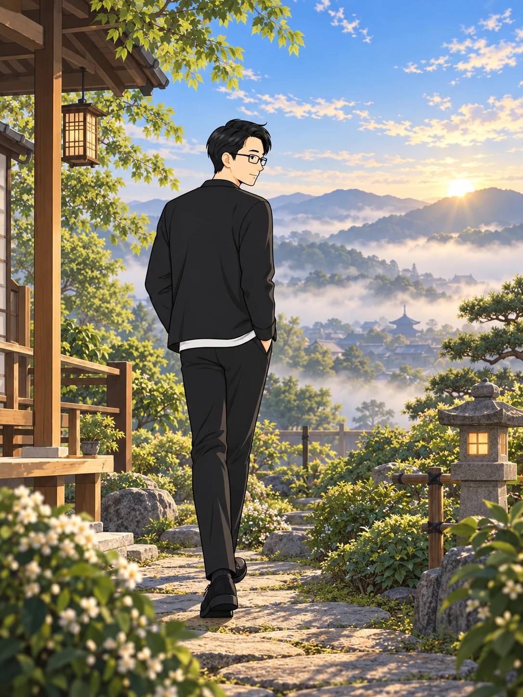
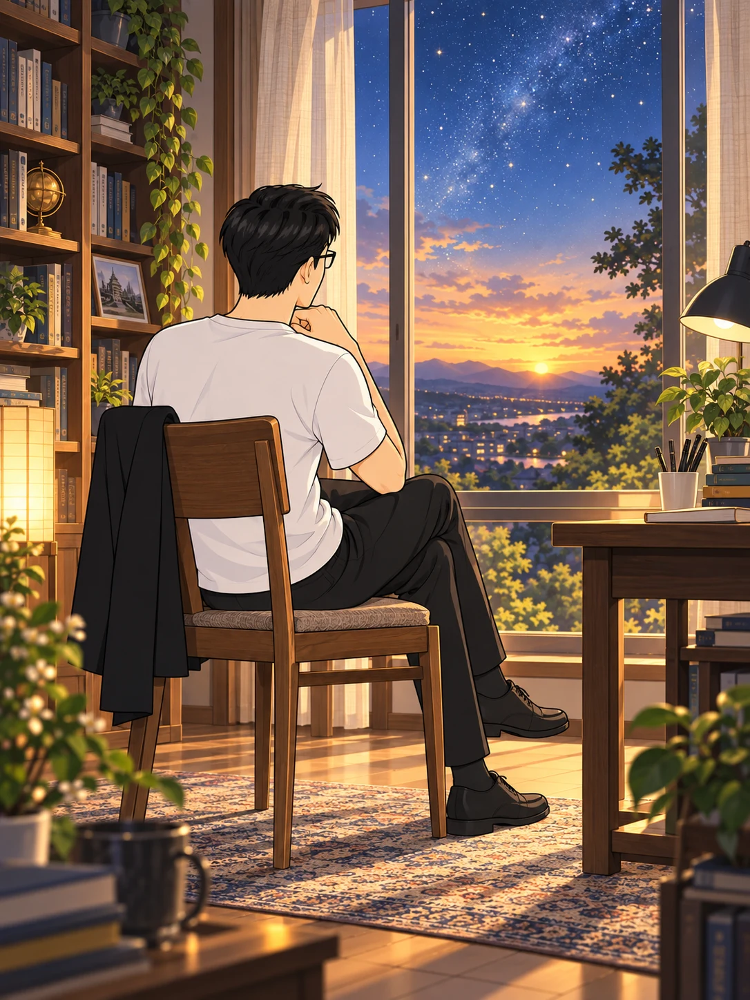
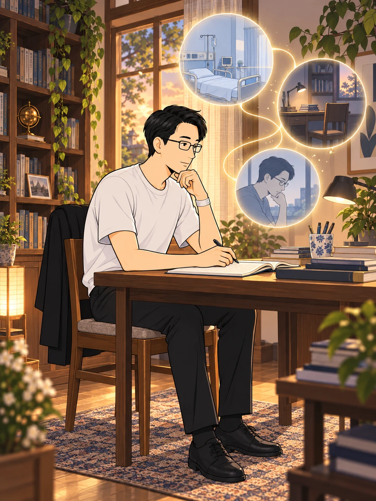
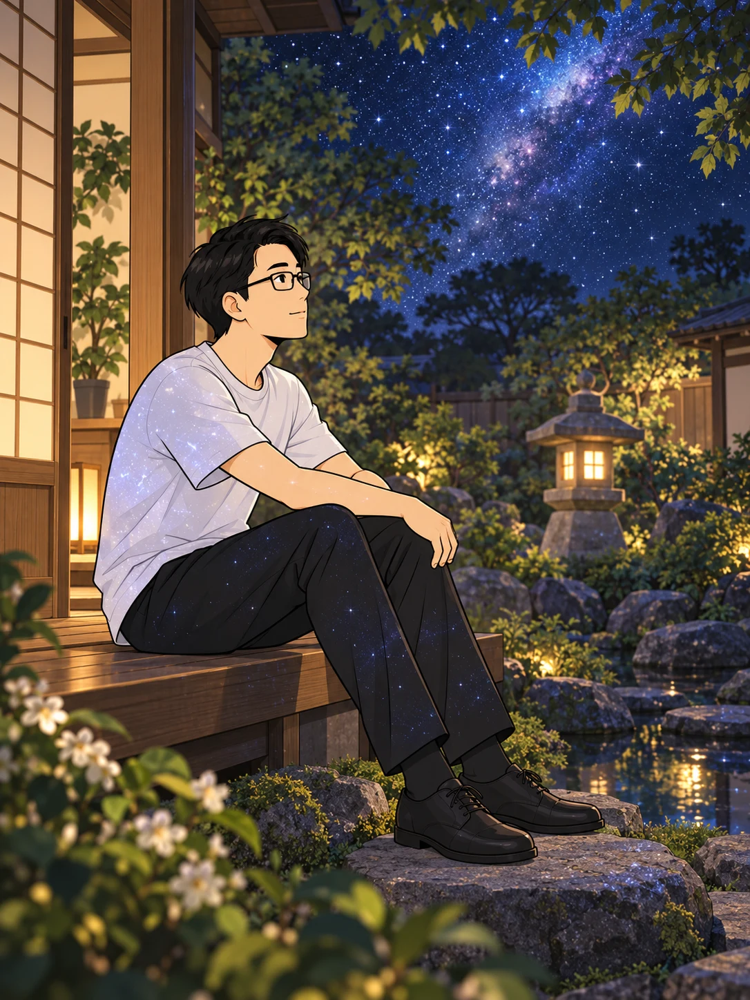
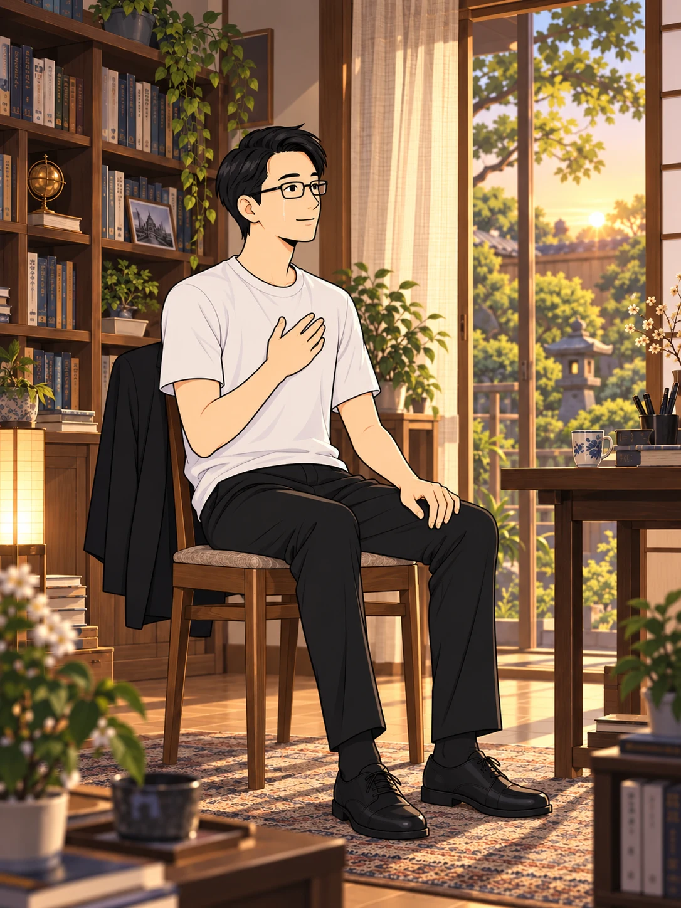
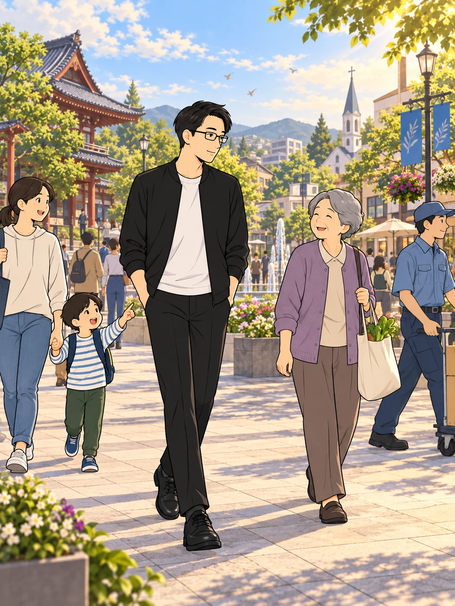
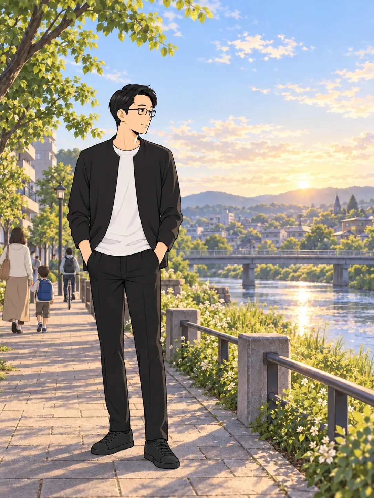

自らの判断への執着を手放すと、
心を覆っていた壁が、
ほどけていくように感じた。

思い込みの向こうに、
こんなにも静かな
広がりがあったのか。
この広がりを、先生は
「超越意識」と呼んだ。
その奥に感じたのは、
どこまでも包み込むような温かさ。

特定の宗教の枠には収まらない。
宇宙全体を包むような存在……
《超越人格》だ。
先生は、その根源的な存在を
《超越人格》と呼んだ。
病、挫折、そして長い葛藤。
ばらばらだった記憶が、
ひとつの道としてつながっていく。

あの苦しみも、遠回りも……
今の私へとつながっていた。
すべてが、導きだったのか。
先生は、自らの歩みを
「愛の導き」と捉え直した。
自分と世界を隔てていた境界が、
薄れていくようだった。

本来の自分は、
この宇宙と切り離された
存在ではなかったのだ……。
宇宙との一体感を、
先生はそのように語っている。
言葉より先に、
涙がこぼれた。

なんという温かさ……。
まるで、ずっと探していた
故郷へ帰ってきたようだ。
長く求め続けた心に、
深い安心が訪れたという。
この安心を、
一部の人だけのものにはしたくない。

宗教の内側に閉じ込めず、
すべての人に通じる道として
伝えていきたい。
問いは再び、
誰もが歩める道へと向かった。
先生は、この体験を
《超越人格への帰還》として語った。

空不動先生の物語
超越人格への
帰還
けれど、歩みはここで終わらない。
その気づきを、
日々の暮らしの中でどう生きるのか。